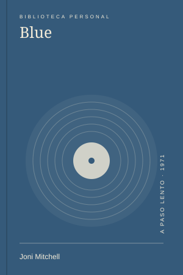
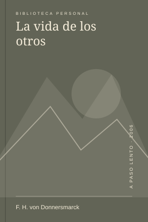

Series
SeriesMidnight Diner: historias alrededor de una mesa
Una puerta abierta de noche y una manera de escuchar sin resolver la vida de nadie.
Las 7 notas que se conectan con 2025.
SeriesUna puerta abierta de noche y una manera de escuchar sin resolver la vida de nadie.

MúsicaHay discos que parecen terminados y, aun así, dejan ver el trabajo de sentir.
 Lecturas
LecturasEntrar en un cuento como quien entra en una biblioteca que no termina.
Una ciudad que me hizo cambiar de dirección más veces de las que había previsto.
Un sendero conocido en una estación distinta, y el permiso para detenerse más.

CineUna historia que cambia de sentido cada vez que alguien realmente presta atención.
Una carpeta de notas puede ser el principio de un lugar propio en la web.